서울대학교 컴퓨터공학부 유승주 교수님의 "고급 컴퓨터 구조" 강의를 필기한 내용입니다.
Memory Hierarchy
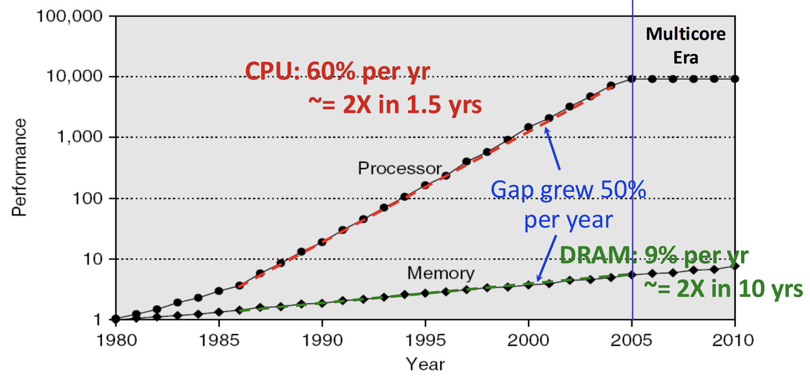
- 일단 기술 발전 상황은 흔히 들었던 얘기다.
- Single core power 는 계속 증가하다가 정체되기 시작한다.
- 이에 따라 multicore 시대가 오고, 따라서 전체적인 compute power 는 계속 증가하는 추세를 보인다.
- 근데 DRAM 은 그 속도를 따라오지 못하고 그 격차는 점점 벌어지게 된다.
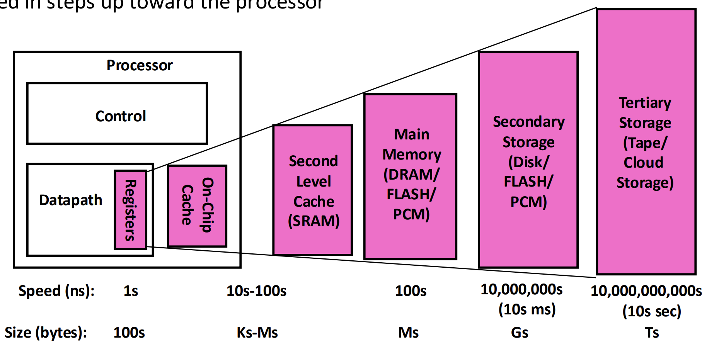
- 이러한 간극을 줄이기 위해 Memory Hierarchy 가 등장하게 된다.
- 일단 간단히 생각해 보면 data access latency 는 데이터가 있는 위치까지의 distance 에 영향을 받는다.
- 근데 capacity 가 커질수록 당연히 매체 (medium) 의 크기도 커지고, 따라서 distance 도 커져 latency 도 커지게 된다고 직관적으로 이해할 수 있을 것이다.
- 따라서 점점 더 작은 capacity 를 가지지만 더욱 빠른 매체를 계층적으로 (Hierarchy) 배치하여 자주 사용하는, 혹은 앞으로 사용할 데이터를 더 빠르게 접근할 수 있게 해주는 것이 기본 아이디어인 셈.
Locality
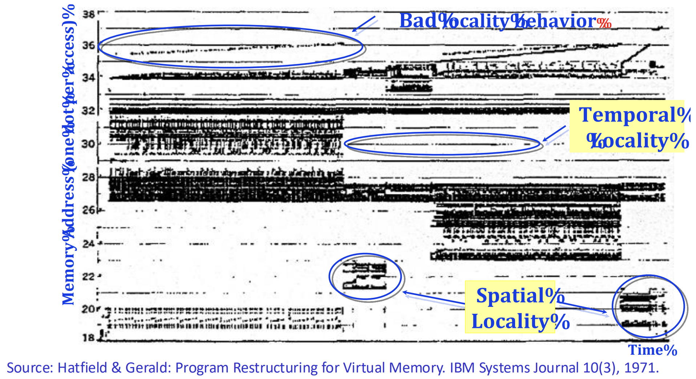
- 위에서 “자주 사용되는, 혹은 앞으로 사용할 데이터를 빠르게 접근” 한다고 했다.
- 즉, 이 말이 곧 Locality 를 의미하는 것이고 따라서 locality 가 없다면 caching 은 별 의미가 없다.
- 그래서 위의 memory access trace 를 보면
- 일자로 쭉 뻗어있는 놈은 같은놈이 계속 사용된다는 것이다. 즉, 이것이 Temporal locality 이다.
- 반면에, 넓은 주소 공간에 걸쳐서 두껍게 trace 가 찍혀있는 부분에 대해서는 주변의 것들이 같이 사용된다는 것이다. 즉, 이것이 Spatial locality 인 것.
- 이 두 locality 에 대해서는 접근법이 다르다.
- 일단 temporal locality 에 대해서는 이놈을 계속 붙들고 있어야 하기 때문에 Replacement Policy 가 중요하다.
- 반면에 spatial locality 에 대해서는 주변 애들을 같이 caching 해야 하기 때문에 Prefetching 이 중요하다.
Terminology & Metrics
- Hit: 원하는 데이터가 cache 에 있는 것.
- Hit rate: 전체 request 중에 Hit 이 발생한 비율.
- Hit time: Hit 일 때, 그 데이터를 가져오는 총 시간. 즉, 이것은 Hit 인지 판단하는 시간과 데이터를 가져오는 시간의 합이다.
- Miss: 원하는 데이터가 cache 에 없는 것.
- Miss rate: 전체 request 중에 Hit 이 발생한 비율. 즉, 1 에서 Hit rate 을 뺀 것과 동일하다.
- Miss penalty: Miss 가 났을 때, 그 데이터를 가져오는 총 시간. 즉, 이것은 lower level memory 로 부터 가져오는 시간과 Miss 인지 판단하는 시간의 합이다.
- Misses Per Killo Instructions (MPKI): 이것이 결국에는 Miss rate 이긴 한데, 다음과 같이 계산한다.
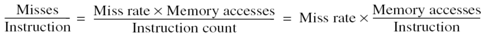
- Average memory access time 은 말 그대로 memory access 에 걸리는 평균 시간으로, 다음과 같이 계산할 수 있다.
- 이놈을 줄이는 것은 항상 좋다. 다만, 이 수식이 의미하는 것처럼 Hit time, Miss rate, Miss penalty 가 모두 잘 조화되어야 한다.
- 가령, Miss rate 를 줄이더라도 Miss penalty 가 아주 커져버리면 결과적으로 별로 의미가 없어지게 되는 것.
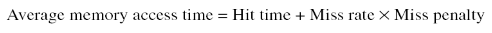
- Block: caching 단위, 보통 우리가 access 하는 단위보다 크다
- CPU cache 에서는 cacheline 이라고 생각하면 될듯
Impact of Memory Access Latency
- 간단한 예시로 memory access latency 가 가지는 영향력에 대해 알아보자.
- 다음은 CPI (Cycles Per Instruction) 이 1 인 아주 간단하고 이상적인 상황에서의 Pipeline 이다.
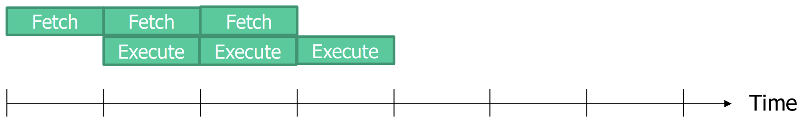
- 하지만 이때 memory access latency 가 두배가 되어버리면, CPI 가 순식간에 2배가 되어버린다.
- 왜냐면 Fetch 에 두배나 더 많은 시간이 걸리기 때문.
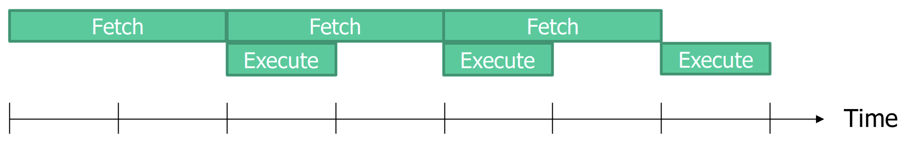
Block Placement
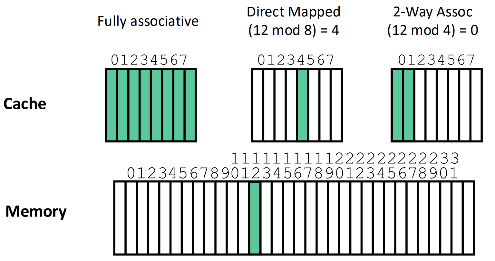
- 많이 봐온 그림이니까 간단하게만 정리하고 넘어가자
- 일단 Associative 라는 것은 말 그대로 “연관” 된다는 것이다.
- 따라서 Fully associative 는 어떤 block 이 cache 의 모든 entry 에 연관될 수 있다, 즉 모든 entry 에 들어갈 수 있다는 뜻이 되는거고,
- Set associative 는 어떤 block 이 “Set” 이라는 단위 내에서 연관될 수 있다, 즉, “Set” 내에서의 모든 entry 에 들어갈 수 있다는 뜻이 된다.
- 그리고 Set 이라는 것은 이것도 말 그대로 “집합” 이다.
- 집합에는 원소가 순서와 중복이 없이 들어갈 수 있다는 점을 생각하면 된다.
- 즉, Set 내에서는 중복되지 않은 block 에 대해, 어느 위치에도 (Set-associative) 갈 수 있다는 의미가 되는 것.
- 이 set 의 크기에 따라 N-way 라는 말이 붙는다. 즉, set entry 가 N 일 때, N-way set 라고 부르는 것.
Fully-Associative Cache
- 위에서 말한 대로, block 이 cache entry 의 어디든 갈 수 있는 경우.
- Fully-associative cache 는 TLB 와 같은 특수한 경우가 아니라면 거의 사용되지 않는다.
- 왜냐면 block 이 어디에든 갈 수 있기 때문에 원하는 block 이 있는지, 있다면 어디에 있는지 확인하기 위해 linear search 를 하거나 복잡한 회로를 사용해야 하기 때문이다.
Direct-Mapped Cache
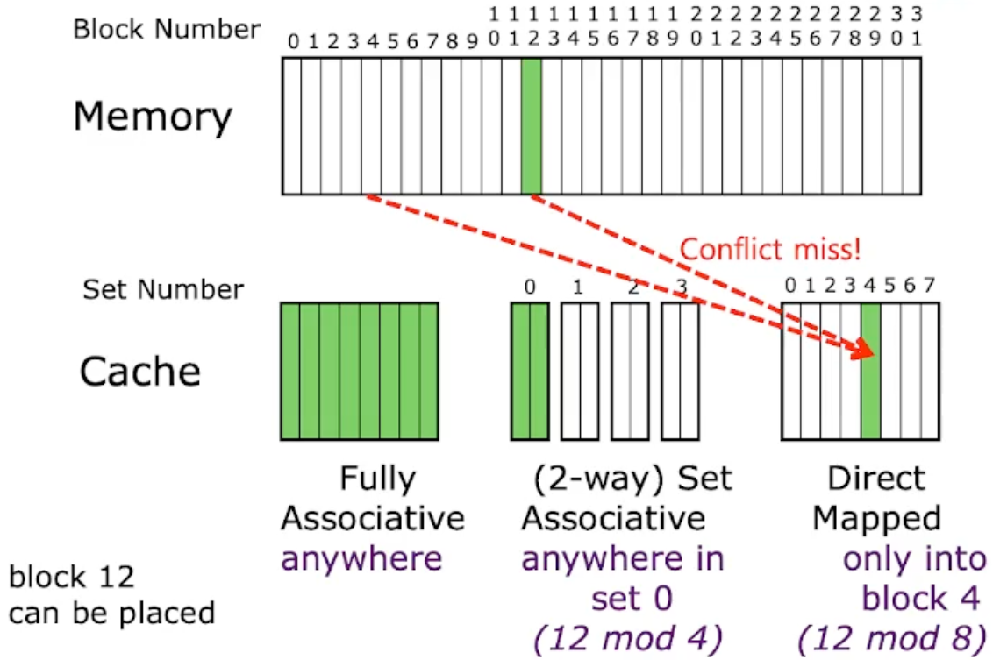
- 만약 Set 의 크기가 1 이라면, 그건 direct-mapped cache 가 된다. 즉, 어떤 block 이 들어갈 수 있는 위치는 하나의 cache entry 밖에 안되는 것.
- 즉, 로 cache entry 가 결정된다.
- 당연하게도 block 이 들어갈 수 있는 cache entry 가 하나밖에 없으므로 conflict 시에는 무조건 replacement 를 해줘야 하는 문제가 있다.
- Direct-mapped cache 는 구현이 간편해서 종종 사용된다.
- 이것은 단순히 “간편함” 과 연관되는 것만은 아니다. 구현이 간단하다는 말은 hit time 이 아주 빠르다는 말이 되기 때문에 average memory access latency 를 줄이는데 도움이 될 수 있다.
- 또한 이때는 mem index 에 cache size 를 modulo 해서 어느 entry 에 있는지 찾는다.
N-Way Associative Cache
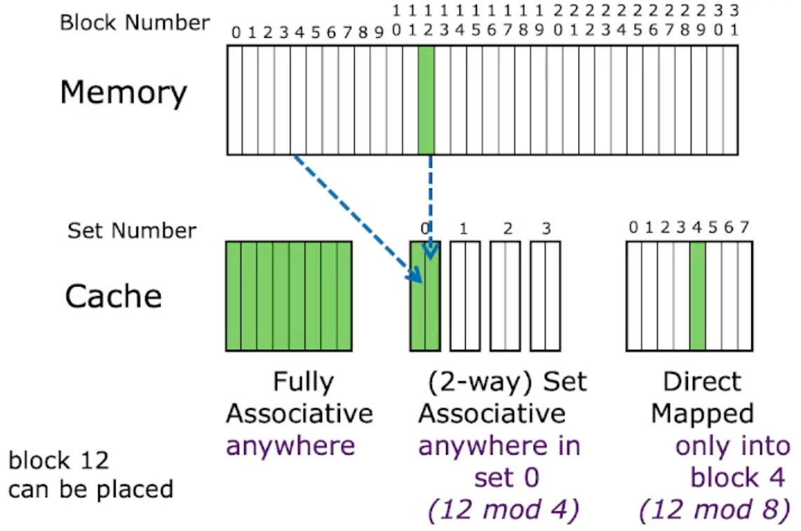
- N 개의 cache entry 를 묶어 set 으로 관리하는 cache.
- Direct-mapped 와는 다르게, block 이 들어갈 수 있는 cache entry 가 N 개이므로 conflict 가 발생하더라도 N 개 까지는 방어가 된다.
- 즉, 로 cache entry 가 결정된다.
- 이로 인해, N 번 까지는 conflict 가 안나므로 체감상 cache size 가 N 배 커진 것 같은 “환상” 을 만들어 준다.
- 하지만 실제로 cache size 가 커지지는 않았으므로, 이러한 set-assiciative cache 의 효과가 좋은 것.
- N-way associative cache 가 가장 많이 사용된다.
- 이놈은 mem index 에 num. of set 을 modulo 해서 어느 set 에 있는지 찾고, 그 안에서 block 을 찾는 형태로 구현된다.
Miss Types
- Compulsory: block 에 처음 접근할 때 발생하는 것
- 이것은 prefetch 혹은 큰 cache line size 등으로 줄일 수 있다.
- Capacity: cache size 가 부족해서 발생하는 것
- 이것은 그냥 cache size 를 늘리는 수 밖에는 없다.
- Conflict: 서로 다른 block 들이 같은 cache entry 에 들어가고자 해서 발생하는 것
- 이것은 그냥 cache size 를 늘리거나 set size 를 늘려서 속일 수도 있다.
- Coherence: write 로 인해 invalidate 되어서 miss 가 나는 것
Finding Block In a Cache
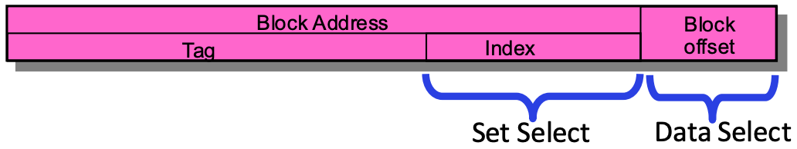
- 우선 알다시피 memory address 을 위와 같은 layout 으로 나눠서 활용하게 된다.
- Block offset (Data select, Byte select): block 안에서 원하는 byte 를 찾을 때 쓰는 것
- 이놈의 크기가 bit 라면, block 의 size 는 byte 가 된다.
- Block address: block 을 찾기 위한 address
- 이놈은 어떤 cache 냐에 따라 Tag 와 Index 로 나뉜다.
- Tag 는 cache 에 있는 이 block 이 내가 찾는 놈이 맞는지 검사하는데 사용되고
- Index 는 cache 내에서의 cache entry index 번호이다.
- 이들이 어떻게 사용되냐는 cache 의 종류에 따라 다르다.
- Block offset (Data select, Byte select): block 안에서 원하는 byte 를 찾을 때 쓰는 것
Direct-Mapped Cache
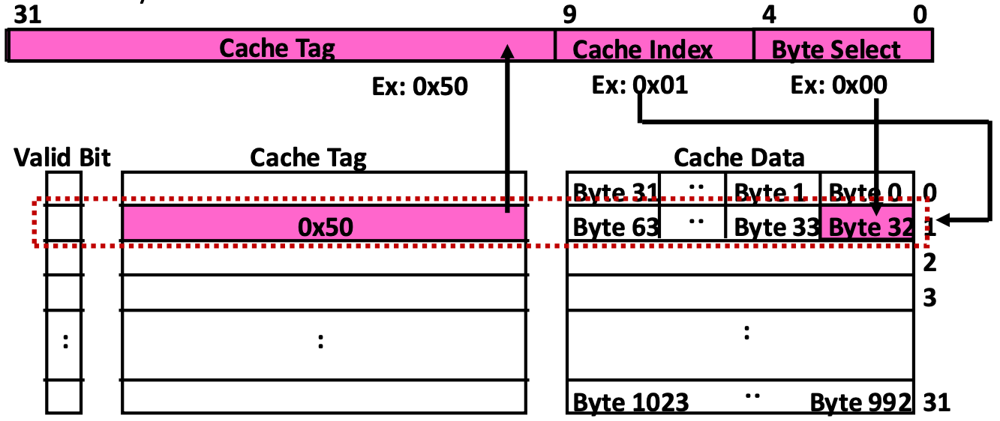
- 보면, 우선 Cache index 로 cache entry 를 찾고,
- Cache tag 를 이용해 이 cache entry 가 내가 찾는 block 이 맞는지 검사한 후,
- 맞다면 block 안에서 byte 를 byte select 로 골라간다.
N-Way Associative Cache
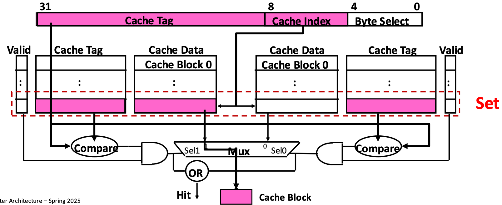
- N-way associative cache 는 위처럼 N 개의 direct-mapped cache 가 있는 형상을 하고 있다.
- 그리고 이 N 개의 direct-mapped cache 에 걸쳐 있는 한 row 가 하나의 set 이 된다.
- 다만 direct mapped cache 와의 차이점은 cache index 로 set entry 를 고른다는 것이다.
- 그래서 우선 cache index 로 set entry 를 고른 후, set 내의 두 cache entry (예시의 그림은 2-way associative 이기 때문에) 에 대해 cache tag 를 parallel 하게 검사한다.
- 그 다음 나온 cache block 에 대해, byte select 로 byte 를 가져가게 되는 것이다.
- Address layout 과 관련해서, direct-mapped 와의 차이점은 저 cache index 의 크기가 다르다는 것이다.
- Direct-mapped cache 에서 cache entry size 가 개였다면,
- 2-way associative cache 에서는 이 cache entry 들이 2개씩 하나의 set 에 들어가게 되므로 set 의 개수는 개 인 것이다.
- 따라서 direct-mapped cache 에 비해 2-way associative cache 의 cache index 의 크기가 1bit 더 작은 것이다.
Fully Associative Cache
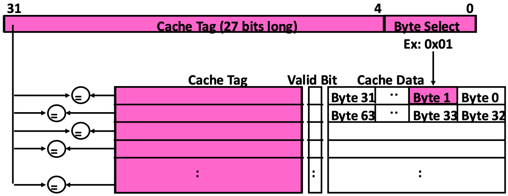
- Fully associative cache 에서는 cache index 없이 모든 cache address 부분을 tag 으로 사용한다.
- 그래서 모든 cache entry 에 대한 cache tag 를 parallel 하게 한번에 비교하고, 그에 따라 cache entry 를 선택하여 byte select 로 값을 읽어가게 되는 것이다.
Replacement
- 당연히 cache 에서는 자리가 부족하기 때문에 누군가는 evict 되어야 한다.
- 이때, 누구를 뺄 것이냐.
Least Recently Used, LRU
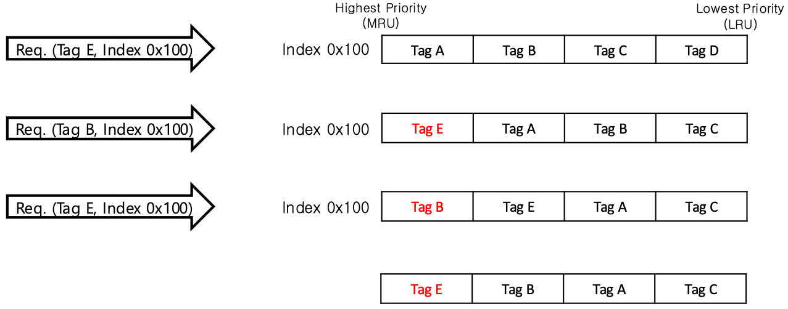
- LRU 를 사용하면 high-priority -> low priority 방향의 queue 에서 최근 접근된 tag 를 high-priority 에 넣는다.
- 알다시피 LRU 는 잘 사용되지 않는다.
- Scan 에서 hit rate 가 곱창나기도 하고
- Mgmt 에 space overhead 가 크기 떄문
- 알다시피 LRU 는 잘 사용되지 않는다.
Re-Reference Interval Prediction, RRIP
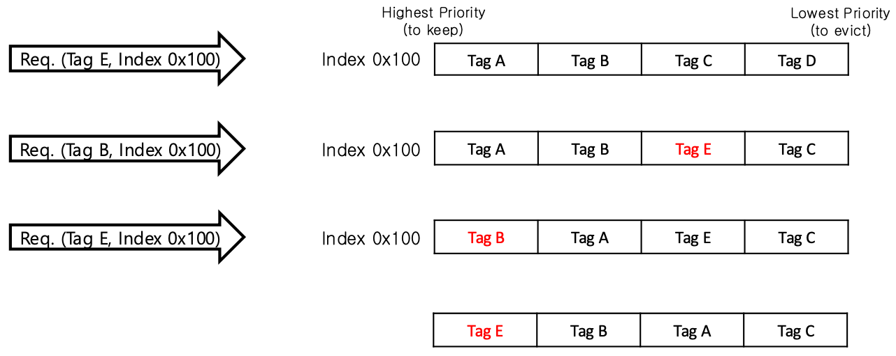
- 이건 접근되면 바로 MRU 에 넣지 않고 일단 queue 에서의 LRU 바로 앞에 (뒤에서 두번째) 에 넣은 다음
- 한번 더 접근되면 그때 MRU 로 옮긴다.
- 이렇게 하는 이유는 데이터가 단 한번만 접근될 때도 있기 때문에 한번 접근되었을 때 바로 최우선순위로 올리지 않고 한번 더 지켜보는 것이다.
- 지금도 그런지는 모르겠는데 이전에는 intel 의 LLC 에서 이렇게 했다고 한다.
Write Policy
- 간단히 복습만 하고 지나가면
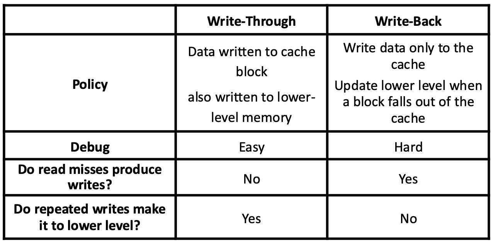
- Write through 는 말 그대로 write 시에 memory 에 까지 쓰는 것이고
- Write back 은 cache 에다가만 쓰고, 나중에 evict 할 때 memory 에 쓰자는 정책이다.
Write Buffer
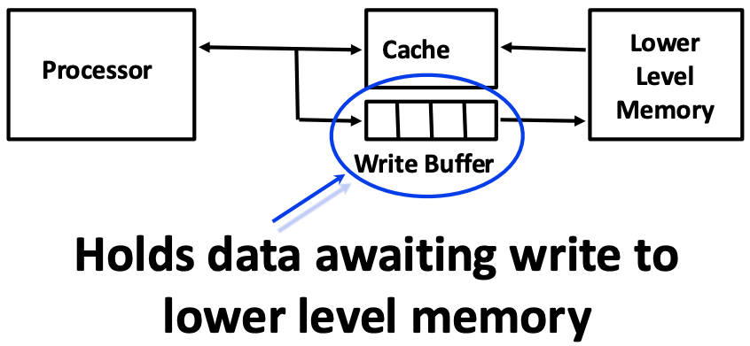
- 알다시피 Write through 를 하게 되면 무조건 memory 로 가기 때문에 성능이 곱창날 수 있다.
- 또한, Write back 을 한다고 해도 dirty block 에 대한 evict 가 빈번해지면 이때도 memory access 가 많아져 마찬가지로 곱창이 난다.
- 이를 방지하기 위해 write buffer 를 활용할 수 있다:
- Write through 에서는 write 시에 memory 까지 가지 않고 저 write buffer 에 쓰도록 하거나
- Write back 에서는 dirty block 이 evict 될 때 저 write buffer 로 가게 한 다음
- Write buffer 가 다 차면 그때 한꺼번에 flush 해버리는 것.
- 그리고 이놈은 추가적인 cache 로도 작용해, cache miss 가 났을때 여기에서 가져갈 수도 있는 가능성을 만들어준다.
Block Size
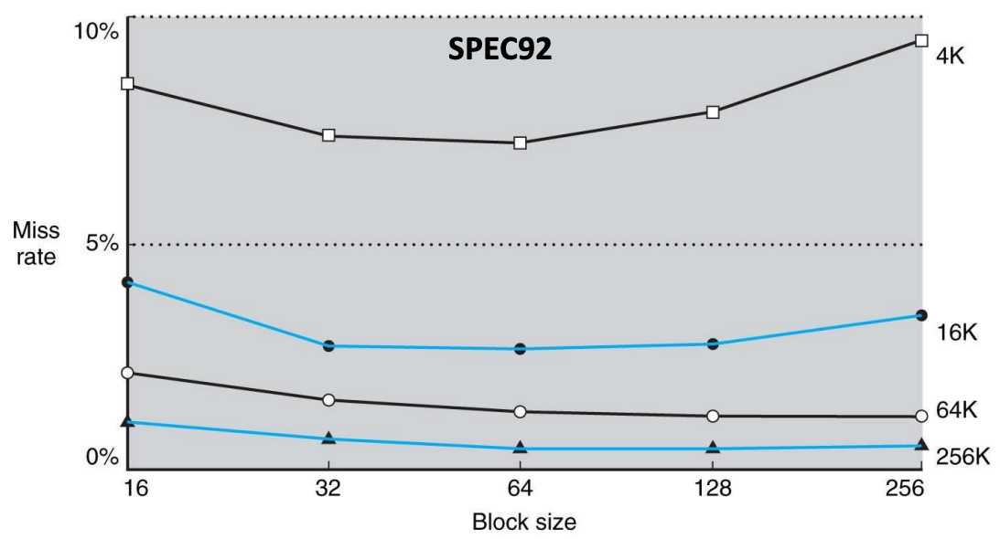
- 위 그래프에서 알 수 있다시피, block size 를 증가시키면서 실행해보면 32, 64B 에서 miss rate 가 가장 적게 나오고 이후로는 다시 증가한다.
- 일단 block size 가 증가한다는 것은 spatial locality 가 좋아지기 때문에 일정 수준까지는 cache hit 이 늘어난다.
- 하지만 block size 가 증가한다는 것은 cache 내의 block 개수가 줄어듦을 의미하기 때문에 conflict 가 더 많이 발생하게 된다.
- 또한 block size 가 클수록 cache 로 올려야 하는 데이터의 양이 많아지기 때문에 miss penalty 가 크다.
- 따라서 이 둘은 tradeoff 관계이다.
Sequential Access (Spatial Locality)
- Sequential access 를 할 때는 당연히 block size 를 키워서 spatial locality 를 키우는 게 좋다.
- 아래 그림을 보자.
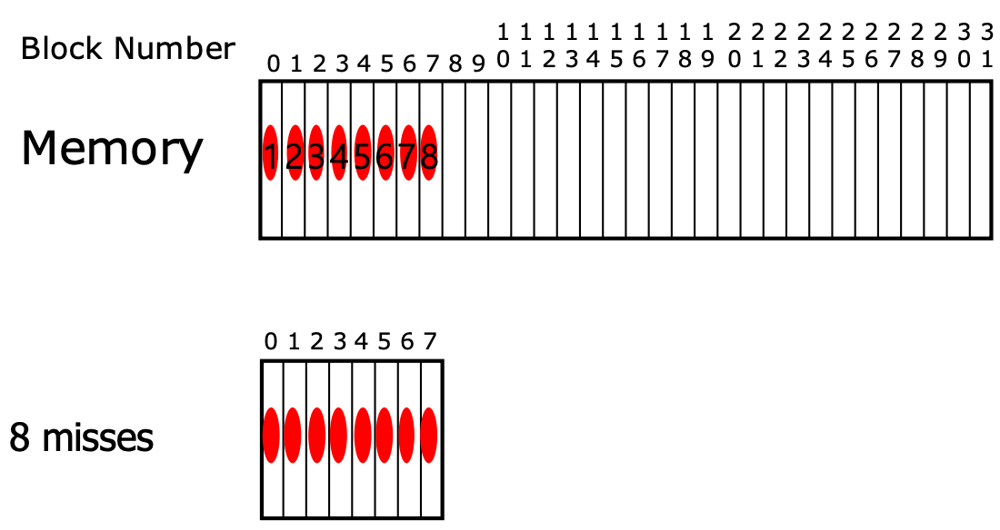
- 위 상황은 block 한개 당 cache entry 에 넣는 경우이다. 이때 8개의 block 에 sequential access 를 하면 8개 모두 compulsory miss 가 난다.
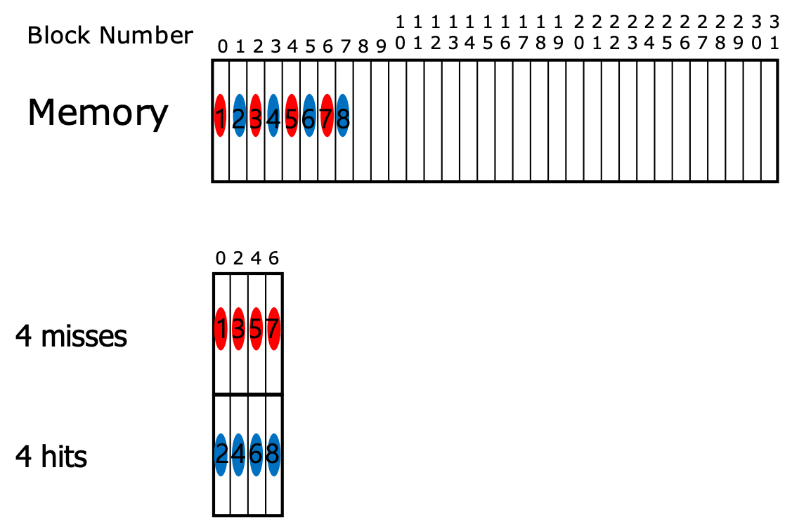
- 하지만 만약에 cache entry size 를 키워서 block 을 두개씩 넣는다고 해보자. 그럼 8개의 block 에 sequential access 를 했을 때, compulsory miss 4번과 hit 4번이 발생하여 성능이 좋아지게 된다.
Random Access w/ Temporal Locality
- 하지만, sequential 이 아닌 random access 를 하되 여러번 반복해서 접근하는 경우에는 상황이 달라진다.
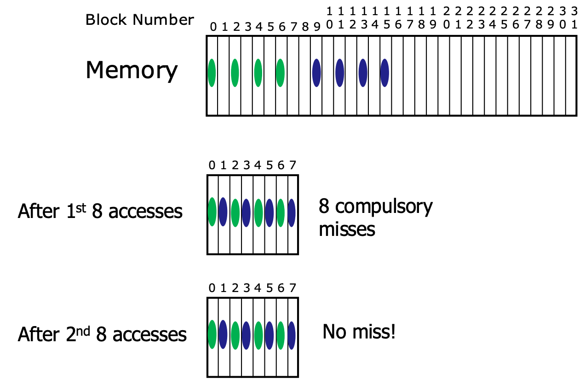
- 만약에 cache entry 에 block 하나씩이 들어간다면, 첫 8번의 접근은 compulsory miss 가 나지만 두번째 8번의 접근은 모두 hit 이 나게 된다.
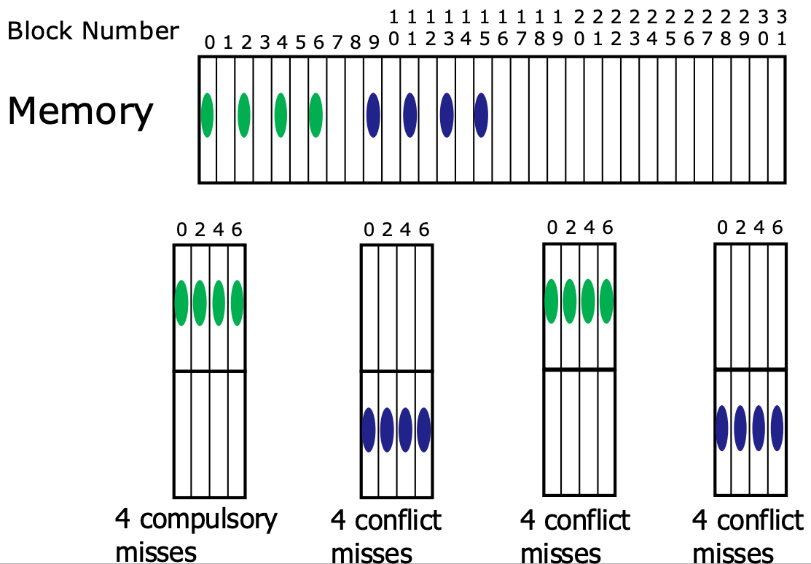
- 하지만 cache entry 에 block 을 두개씩 넣고, 만약 접근하는 애들이 conflict 관계에 있다면 위와 같은 상황이 발생할 수 있다.
- 보면 첫 8번의 access 를 할 때는, 4번 정도는 동일하게 compulsory miss 가 난다.
- 근데 다음 4 번의 경우에는 conflict miss 가 나더니
- 두번째 8번의 access 를 할 때는 모두 conflict miss 가 나게 되는 것이다.
Conclusion
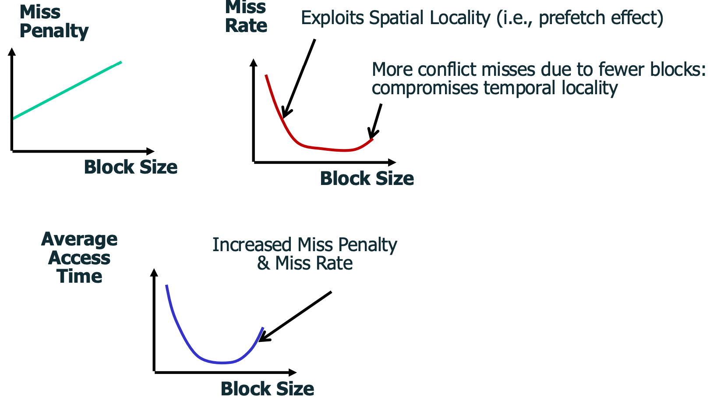
- 따라서 정리해 보면 sequential access 일때는 spatial locality 가 높은 larger block size 가 유리하지만, temporal locality 가 중요할 때에는 conflict 가 적게 나야 하기 때문에 smaller block size 를 가져가서 더 많은 cache entry 를 갖는 것이 유리하다.
- 이런 tradeoff 를 고려했을 때, 많은 CPU 들에서 block size 를 32byte 혹은 64byte 로 정한다고 한다.
Cache Size, Square-Root Rule
- Cache size 가 커지는 것은 좋기는 하지만 그 영향은 그리 크지 않을 수 있다.
- 보통 block size 가 4배 늘어나면, cache miss 는 2배 (4의 2제곱근) 만큼 줄어든다고 한다.
- 따라서 이것을 Square-root rule 이라고 부른다.
Set Size, 2:1 Cache Rule
- 그럼 set size 를 변화시키면 성능은 어떻게 변할까. 아래의 그래프를 보자.
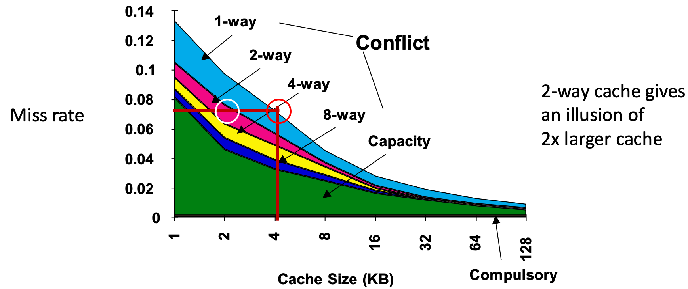
- 보면 (1) cache size 가 4KB 인 1-way cache 와 (2) cache size 가 2KB 인 2-way cache 의 miss rate 가 유사한 것을 볼 수 있다.
- 따라서 같은 cache size 일 때, set size 를 늘리면 그에 맞게 miss rate 가 떨어진다.
- 그래서 set size 를 늘리면 cache size 도 그만큼 늘어나는 것 같은 느낌을 준다고 (illusion) 표현하는 것이다.
- 이것을 2:1 Cache Rule 이라고 한다.
- 사이즈가 인 1-way cache 는 사이즈가 인 2-way cache 와 miss rate 가 동일하다는 것.
- 하지만 위에서 말한 것처럼 miss rate 가 전부가 아니다.
- 왜냐면 set size 가 커질수록 비교해야 하는 tag 의 수가 많아지기 때문에, hit time 이 커져 전체적인 access latency 가 오히려 안좋아지고 power consumption 도 커지게 되는 문제가 있다.
- 아래의 표를 보자.
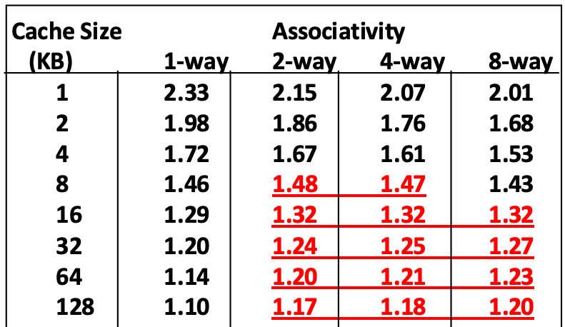
- 이 표에서 빨간색 글자는 set size 가 커졌음에도 성능이 좋아지지 않은 놈을 표시하는 것이다.
- 따라서 보면 cache size 가 4KB 를 넘어가면 오히려 2-way 일때부터 성능이 안좋아지는 것을 알 수 있다.
- 물론 이것은 좀 옛날 데이터여서 지금이랑은 다르긴 하지만, 이러한 경향성은 동일하기 때문에 보통은 많아봤자 set size 를 8 보다 크게 하지는 않는다고 한다.
Victim Cache
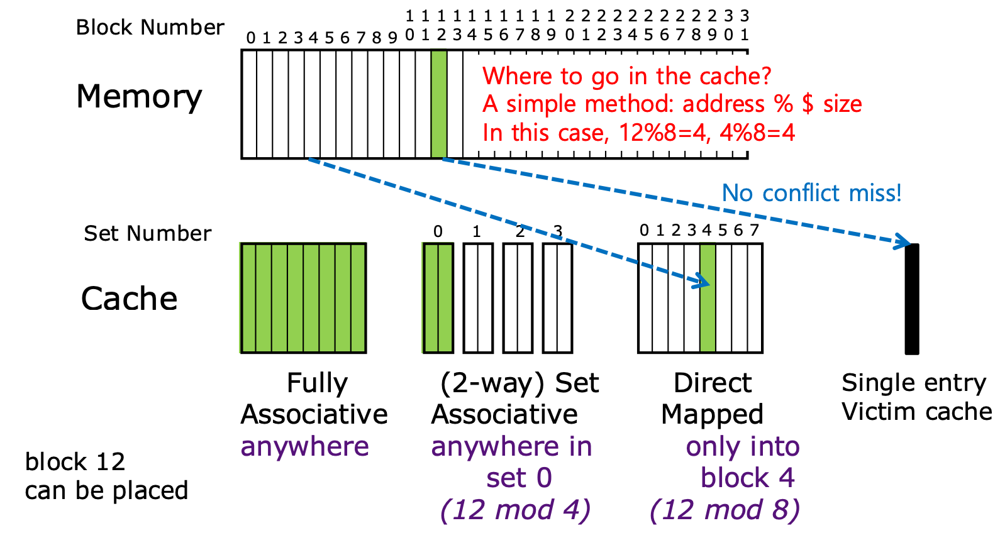
- 이것은 Direct-mapped cache 를 사용하되, 적은 양의 victim cache 를 두어서 evict 된 놈들을 잠깐 저장하는 방법이다.
- 그래서 위의 예시를 보면, 원래는 conflict miss 가 났어야 하는 두 block 에 대해, 하나는 cache 에 있고 하나는 evict 되었지만 victim cache 에 저장되어 있는 덕분에 conflict miss 가 나지 않는 것을 볼 수 있다.
- 이렇게 함으로써 direct-mapped cache 의 빠른 hit time 을 가져가면서, 2-way associative cache 와 유사한 효과를 낼 수 있다.
- 근데 Pipeline 와 관련해서 문제가 있어서, 요즘은 잘 사용되지는 않는다고 한다.
Pseudo-Associative Cache
- 얘는 Cuckoo Hash 와 유사한 전략을 취하는 방법이다.
- Direct-mapped cache 를 사용하되, conflict 가 나면 modulo 가 아닌 다른 방법으로 새로운 cache index 를 계산해 거기에 비어있으면 넣는 것이다.
- 그리고 다시 그 block 을 찾을 때는, 처음에는 modulo 로 접근했다가 tag 가 다르면 아까의 방법으로 새로운 cache index 를 계산해 그곳에 방문한다.
- 그래서 이 두 방법을 다 시도해도 없으면 그때 cache miss 가 되는 것이다.
- 따라서 이 두번째 접근은 첫 시도때 바로 hit 이 나는 것보다는 당연히 delay 가 있기 때문에 이 경우에 대해 Pseudo-hit (Slot hit) 이라고 부른다.
- 그리고 direct-mapped cache 이지만 마치 2-way associative cache 와 같은 효과가 나기 때문에 이 방법을 Pseudo-associative cache 라고 부르는 것이다.
- 하지만 이 방법도 잘 쓰이지는 않는다고 한다: 이놈도 뭐 pipeline 관련해서 문제가 있고, cuckoo hash 처럼 SW 로 구현하는 것이 아니고 HW 로 구현하기에는 까다롭다고 한다.
Inclusive, Exclusive Cache Policy
- Inclusive Policy: 상위 레벨의 cache 에 있는 데이터를 하위 레벨의 cache 에도 동일하게 유지하는 정책이다.
- Exclusive Policy: 반대로, 상위 레벨의 cache 에 데이터가 올라가면, 하위 레벨에서는 그것을 지워 둘 간의 중복된 데이터가 없게 하는 방법이다.
- 이 둘은 tradeoff 가 있다:
- Inclusive 를 하게 되면 데이터의 중복은 있지만, dirty 가 아닌 block 에 대해서는 그냥 해당 block 을 덮어씌우는 것으로 eviction 이 가능하다.
- 반대로, Exclusive 를 하게 되면 데이터의 중복은 없지만, eviction 을 할 때 dirty 가 아니라 하더라도 하위 level 로 데이터를 옮겨줘야 하는 overhead 가 발생한다.
- 따라서 보통 상위 레벨과 하위 레벨의 크기 차이가 많이 나는 경우에는 Inclusive 로 하고, 차이가 적은 경우에는 Exclusive 로 한다.
- 요즘은 대부분 크기 차이가 많이 나기 때문에 Inclusive 를 사용한다.
Read, Write Priority
- CPU 에는 Load unit 과 Store unit 이 따로 있기 때문에 read request 와 write request 가 동시에 들어올 수 있다.
- 이런 경우에, read request 를 더 높은 우선순위로 처리한다.
- 왜냐면 write request 의 경우에는 별도의 write buffer 를 사용하는 등의 방법으로 async 하게 할 수 있지만
- Read request 의 경우에는 그런 것이 불가능하기 때문.
Virtually Indexed Physically Tagged (VIPT) Cache
- Cache 에서는 어떤 memory address 를 사용하는게 좋을까. 다음의 세 선택지가 있다.
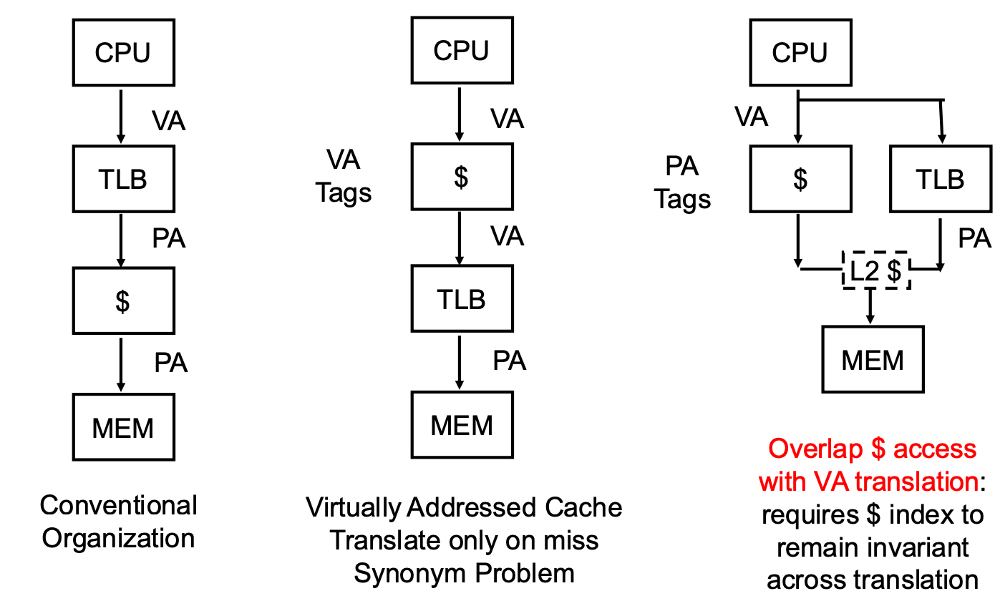
- 우선 첫번째는 cache 에서는 무조건 physical address 를 사용하도록 하고, 따라서 cache 에 접근하기 전에 무조건 TLB 를 들르게 하는 방법이다.
- 하지만 이 방법은 TLB 를 들르는 시간이 문제가 된다: 일단 TLB 에 들르는 것 자체의 latency 도 있거니와, 만약에 TLB miss 가 나버리면 multi-level page table 때문에 여러번 memory 를 왔다갔다 해야 하고, 따라서 latency 가 아주 커져버린다.
- 그리고 두번째는 cache 에서는 무조건 Virtual Address 를 사용하도록 하는 것이다.
- 이렇게 하면 저 TLB 에 의한 latency 는 사라진다. 하지만 VAS 는 각 process 마다 갖고 있는 것이기에, cache 에 어떤 process 의 virtual address 인지를 같이 명시해 줘야 한다 (aliasing problem).
- 이것을 해결하기 위해 나온 방법이 저 세번째 이다.
- Cache 와 TLB 에 parallel 하게 접근해버리는 것.
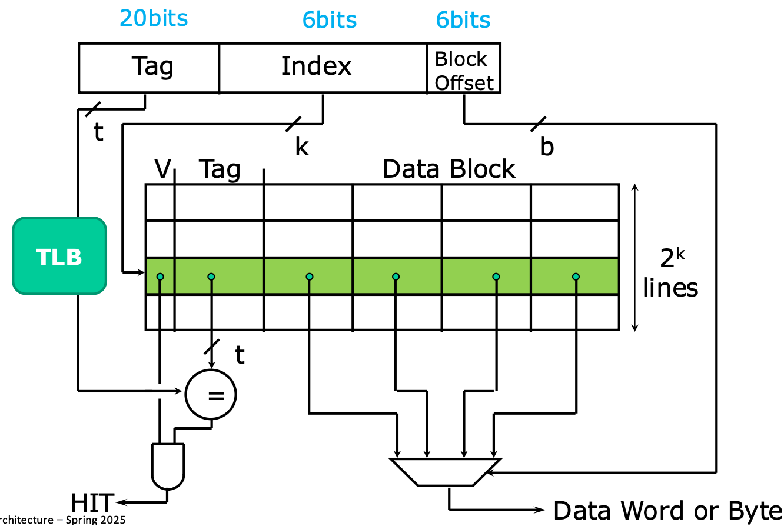
- 그래서 전반적인 구조는 위와 같다. 이것을 TLB side 와 cache side 각각에 대해 알아보자.
- 일단 TLB 는 Virtual Page Number (VPN) 을 Physical Page Number (PPN) 으로 바꿔주는 놈이란 것을 기억하자.
- 만약 page size 가 4K 라면, 32bit 주소 체계에서 page offset 12bit 을 제외한 20bit 가 VPN 이 된다.
- 그래서 이 VPN 을 TLB 에 넣으면, PPN 이 나오게 될 것이다.
- 그리고 cache side 에서는, cache tag 은 PPN 과 동일한 20bit 로 하고 나머지 12bit 중에서 cache index 에 6bit, 나머지 byte select 에 6bit 을 주는 layout 을 사용한다.
- 그렇게 하면 일단 입력받은 memory address 가 virtual address 인지 physical address 인지와 무관하게 cache index 로 cache entry 에 접근할 수 있을 것이다.
- 그럼 이때 cache entry 에 적혀있는 tag 는 PPN 이 된다.
- 따라서 cache entry 의 tag 에 있는 PPN 과 TLB 로부터 얻어온 PPN 을 비교하면 일단 이놈이 hit 인지 아닌지 알 수 있게 된다.
- 그리고 나머지 6bit byte select 로 block 내에서 원하는 block 을 찾으면 되는 것이다.
- 이렇게 하면 TLB 와 cache access 를 parallel 하게 처리할 수 있고, cache 에 불필요하게 process ID 같은 것도 넣을 필요가 없다.
- 하지만 이 방법도 한계가 있다. 이 방법을 이용하면 cache size 가 4K 로 제한된다.
- 왜인지를 살펴보면, cache index 와 byte offset 을 합친 크기가 무조건 12bit 이어야지 PPN 와 cache tag 를 동일한 크기로 만들 수 있기 때문에, 이 12bit 로 표현할 수 있는 byte 의 개수는 byte 로 제한된다.
32KB, 4-Way Set Associative Cache
- 그래서 위와 같은 한계점을 돌파하기 위해, 다음과 같이 한다고 한다.
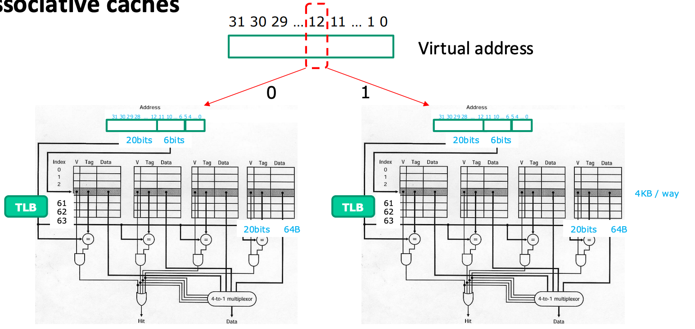
- 우선 위에서는 direct-mapping 을 기준으로 cache size max 가 4K 였기 때문에, 일단 이것을 4-way associative 로 하면 cache size 를 16K 로 만들 수 있을 것이다.
- 그리고 TLB + 4-way set associative 전체를 두개를 구비하고, virtual address 의 12번째 bit 을 이용해 이 둘 중 하나를 선택하도록 하면 총 사이즈가 32K 인 cache 를 구성할 수 있다.